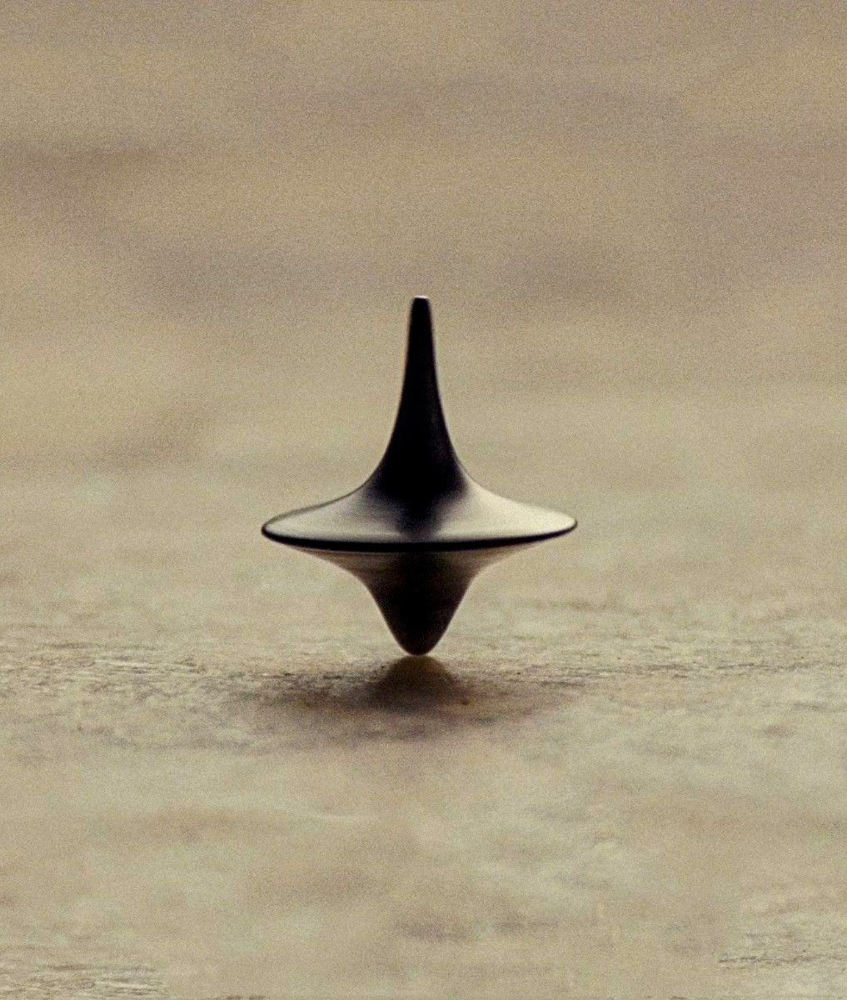

The Unreasonable Realness of Dreams
Image from Inception (2010)
Today I had a dream, and it was a unique one just like every other dream, but I want to share something with you.
You may have noticed that in your dreams you rarely have a smartphone with you (at least that's the case with me), and today was one of those exceptions where I actually had a phone in my dream. I won't go much into the details, but in summary: I had a phone in my pocket and went somewhere like a festival or gatherings like a mela. After enjoying my time there and returning, I noticed I no longer had my smartphone in my pocket. The situation in the dream felt more tense than it probably would in real life (at least it felt like that). My friends helped me call my number, and someone picked up. He asked us to verify our authenticity, and we tried to explain everything, but he disconnected the call, and afterward the phone was unreachable. What happened after that, I don't really remember. But it wasn't important, because when I woke up, my phone was on the desk.
After pondering the dream, I felt like it was some kind of movie (I like watching movies, so maybe that's why it felt that way). And somehow, although I don't know if this is the case for anyone else, I don't feel the passage of time in dreams the way I do in real life. Maybe it's beyond our space-time complexity, or maybe it's something about our consciousness or reality, or something else entirely. On some occasions, I've also experienced dreaming for what feels like a long time even when I've only been asleep for an hour.
Some dreams also feel like another life in another metaverse (referring to the world of dreams here), and it takes some time to come back to reality. I'm not exaggerating dreams here, but they really are more mysterious than we usually think.
Sometimes I ponder how dreams work, how neurons in our brain combine memories and create something that feels totally unique. What is this algorithm, and how does it work? There are a lot of questions, and many of them are not answerable by looking at the current state-of-the-art AI or AGI.
What do you think about dreams? How long do you think AGI will take to be able to dream, or is it just something unique to us in our evolution?
I would love to train a model to dream if there were ever an algorithm for dreams!